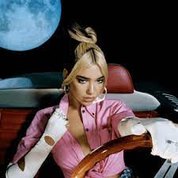
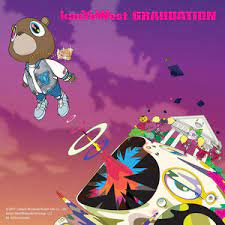

A l b u m s
Future Nostalgia

Future Nostalgia is the second studio album by Albanian singer Dua Lipa.
Writing for DIY, Elly Watson wrote "this album has proved: Dua will be going down in pop history as one of the best".
Favorite songs:
Levitating
Physical
Love again
The Melodic Blue
The Melodic Blue is the debut studio album by American rapper and record producer Baby Keem. 
It was released on September 10, 2021.
Favorite songs:
16
South Africa
Trademark USA
Graduation

Graduation is the third studio album by American rapper and producer Kanye West, released on September 11, 2007.
Graduation was named to year-end lists for 2007 by multiple publications.
USA Today ranked it as the best album of the year, with the staff lauding the "musical and thematic variety" as well as "its articulate and witty rhyming".
Favorite songs:
Homecoming
Everything I am
Good Morning